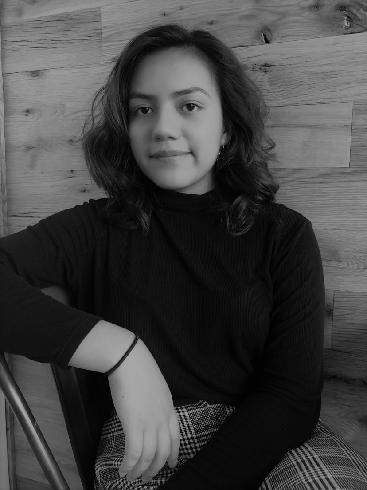

Yamilett Estrada-Reyes
Co-Founder & CEO
Yamilett is a sophomore at Lane Tech College Prep, and an advocate for racial diversity in tech. Having grown up in the South Side of Chicago,
she is driven by a passion for social good and inflicting change. Outside of Protostar, she leads CS workshops at local middle schools, acts as
a mentor in her local library, and is heavily involved in all-female or all-Latinx CS communities as an NCWIT Awardee, Techqueria member,
and LatinX Scholar. During her free time, she likes to workout at her local boxing gym, drink copious amounts of coffee,
listen to Thrice, and attend local hackathons and tech meetups. Through her experiences, she hopes to close the gender and racial gap in STEM
and inspire Latinas and first generation Americans, like herself, to pursue careers in STEM.
 sponsors
the hub
our team
about
home
sponsors
the hub
our team
about
home